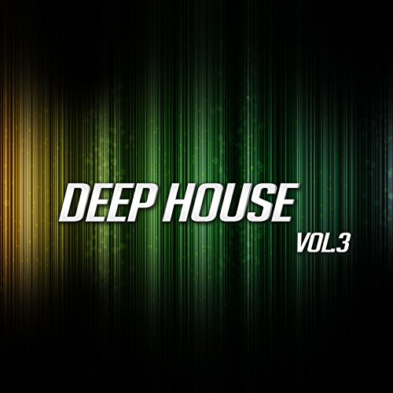
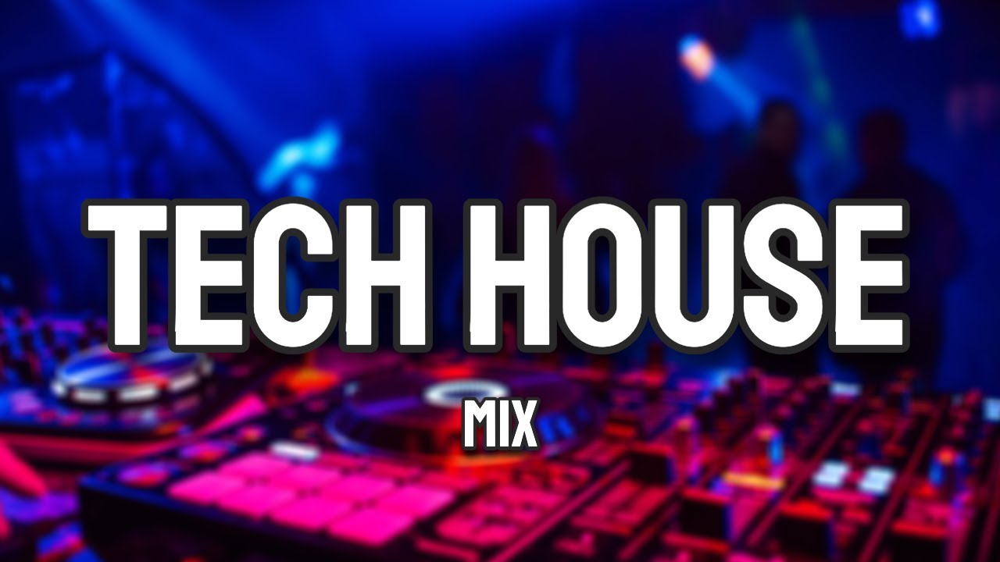
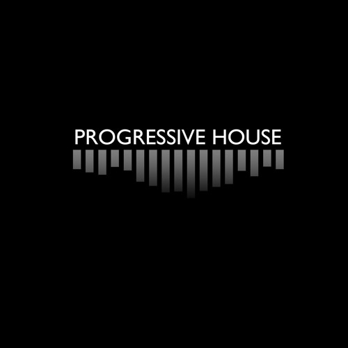

Es un estilo de House con sonidos suaves, bajos profundos y un ambiente relajado.
Artista: Purple Disco Machine
Canción: My House
Escuchar canción
Combina elementos del House y el Techno, con ritmos marcados y sonidos electrónicos.
Artista: FISHER
Canción: Losing It
Escuchar canción
Es un estilo que desarrolla la música poco a poco y crea ambientes amplios y melódicos.
Artista: Eric Prydz
Canción: Opus
Escuchar canción